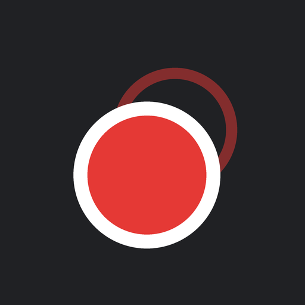
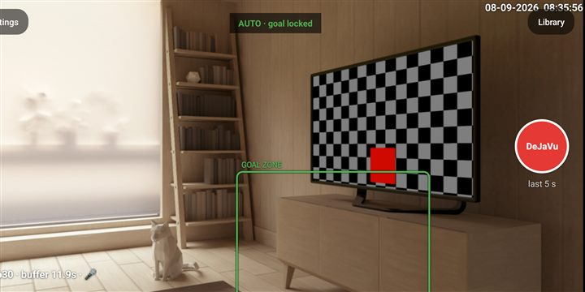
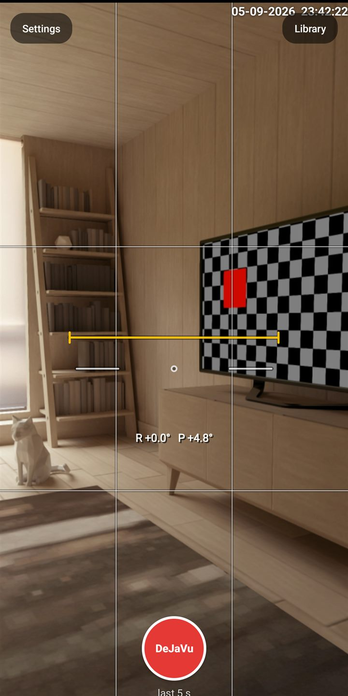
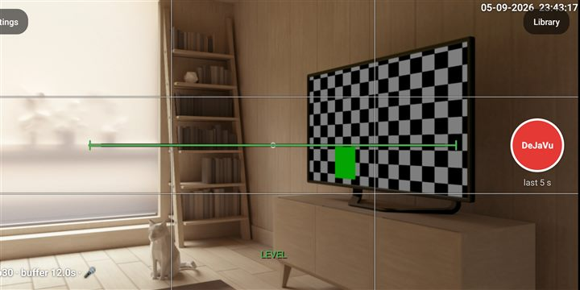

FullRink apps / DejaVu Cam

DejaVu Cam is always recording to memory, so you never miss the moment. When the goal, the save or the hit happens, one tap saves the last 5 to 30 seconds as a clip, with a few extra seconds of tail. Replay it in slow motion, step through it frame by frame, keep or share.
In testing on Google Play (package th.co.aftershoot.drillcam).
What it does
- Always-on recording to a RAM buffer, nothing saved until you tap
- Buffer of 5, 10, 15, 20 or 30 seconds, plus up to 5 seconds of tail
- 1080p at 60 fps when the phone supports it
- Replay at 1x, 0.5x and 0.25x with single-frame stepping
- Corner replay loops the last clip while you keep recording
- Pinch zoom, rule-of-thirds grid, sound on or off
- Clips go straight to your gallery and are easy to share
Screens





Questions about DejaVu Cam?
Tell us what your rink needs, or ask to join the test.